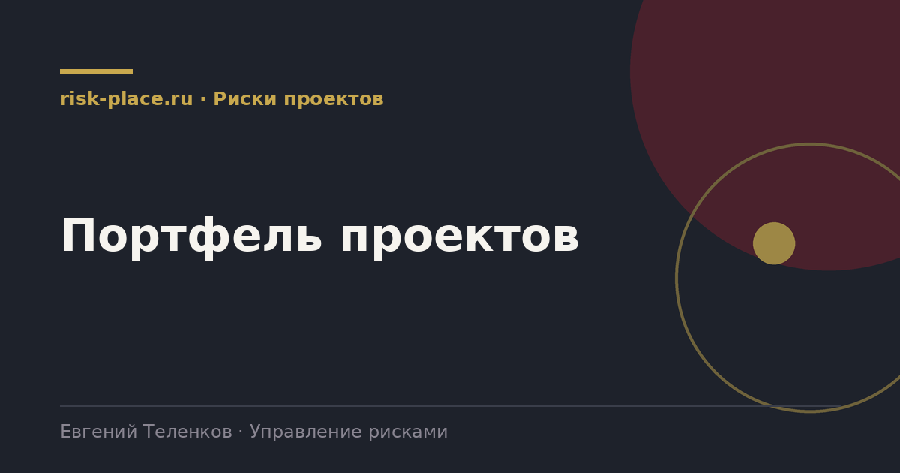

risk-
risk-Единые правила
- Одинаковые шкалы и категории во всех проектах, иначе сравнение невозможно
Главная · Библиотека · Риски проектов · Портфель проектов
Библиотека · Риски проектов
Отдельный проект может быть в зеленой зоне, а портфель при этом в критической. Видно это только сверху.

Первое, конкуренция за ресурсы. Три проекта независимо друг от друга запланировали одного и того же ключевого специалиста или одну и ту же бригаду на один и тот же месяц. В каждом реестре риска нет, в портфеле он критический.
Второе, концентрация. Пять проектов зависят от одного поставщика, одной технологии или одного согласующего органа. Отказ в одной точке останавливает половину программы.
Третье, совокупная нагрузка на денежный поток. Каждый проект по отдельности укладывается в резерв, но одновременная реализация рисков по нескольким создает потребность в финансировании, которой нет.
Одна страница на весь портфель.
| Показатель | Смысл |
|---|---|
| Число проектов по зонам риска | Сколько проектов в красной, желтой, зеленой зоне и как изменилось за период |
| Совокупный расход резервов | Израсходовано против выполнено по портфелю в целом |
| Топ-5 рисков портфеля | Риски, влияющие более чем на один проект |
| Узкие места по ресурсам | Ключевые специалисты и бригады с перегрузкой на горизонте квартала |
| Концентрация | Поставщики, технологии и подрядчики, от которых зависит более одного проекта |
| Проекты, требующие решения | Перечень с формулировкой требуемого решения |
Занимает несколько часов в месяц при готовых реестрах проектов.
В практике почти всегда обнаруживается одно и то же. Несколько проектов планируют работы на действующем производстве в один и тот же период планового останова, потому что это единственное окно в году. Суммарный объем работ физически не помещается в окно.
Каждый руководитель проекта об этом не знает или знает, но рассчитывает договориться. Обнаруживается конфликт обычно за две недели до останова, когда изменить уже ничего нельзя. Портфельный взгляд снимает этот класс проблем полностью, если ведется хотя бы поквартально.
Частые вопросы
Одна форма для любого вопроса
Расскажем о ближайших датах, предложим формат под ваш состав участников и назовем порядок бюджета.
Предпочитаете почту — напишите на info@risk-place.ru. Адрес: Москва, улица Скаковая, 32с2.